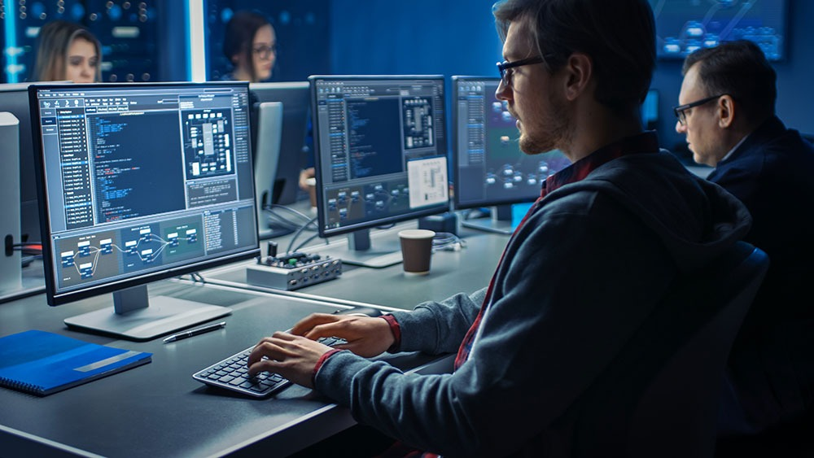

Il significato del Supporto Tecnico
Concetto
Il supporto tecnico di computer e laptop è un servizio specializzato che offre assitenzia agli
utenti e alle azienda per risolvere problemi relativi all'hardware (componenti fisici) e al software
(programmi) dei loro computer.
Il obietivo è trovare e diagnosticare i guasti, eseguire riparazioni, ottimizare le prestazioni
e prevenire incidenti futuri.
Questo supporto puo essere di persona o da remoto e si concentra sulla manutenzione dei sistemi
operativi, installare e configurare reti, eseguire manutenzione preventiva e correttiva, nonchè
formare e assistire agli utenti nell'uso della tecnologia, sia da remoto che di persona.

L'importanza del supporto tecnico informatico
- Resolución de problemas, promoviendo la identificación y solución de fallos técnicos,
minimizando tiempos de inactividad y pérdidas para la empresa.
- Mantenimiento de sistemas, asegurando el correcto funcionamiento de los sistemas y equipos,
optimizando su rendimiento y prolongando su vida útil.
- Optimización de recursos, ayudando a utilizar eficazmente el hardware y software disponible,
evitando gastos innecesarios en soluciones temporales o no adecuadas.
- ctualización y seguridad,A facilitando la implementación de actualizaciones y parches,
protegiendo la infraestructura tecnológica contra amenazas y vulnerabilidades.
- Apoyo al usuario, proporcionando asistencia directa a los usuarios para resolver dudas y mejorar
su experiencia, aumentando la productividad y satisfacción.
- Adaptación a nuevos entornos tecnológicos, acompañando a la empresa en el proceso de
adopción de nuevas tecnologías, asegurando una transición sin inconvenientes.
- Monitoreo preventivo, permitiendo la supervisión continua de sistemas, detectando posibles fallos
antes de que se conviertan en problemas graves.
- Ahorro de tiempo y recursos, al resolver incidentes rápidamente, evita pérdidas de tiempo y
reduce el impacto económico de problemas técnicos.
- Fomenta la continuidad del negocio, al mantener los sistemas funcionando, asegura la continuidad
operativa y minimiza interrupciones que afecten a la productividad.
- Mejora en la toma de decisiones, proporcionando datos y recomendaciones técnicas que facilitan
decisiones estratégicas sobre la infraestructura tecnológica de la empresa.

Siguenos en: